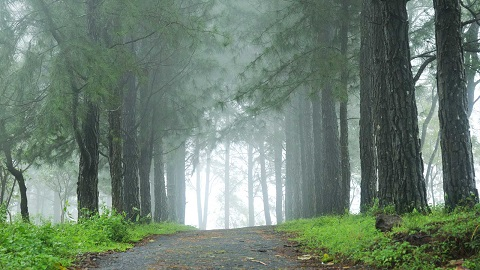

Top Destinations

Bird Sanctuary Kumarakom

Ilaveezha Poonchira

Vagamon

Kumarakom
Venbanad Lake
Kottayam is a city in the Indian state of Kerala. Flanked by the Western Ghats on the east and the Vembanad Lake and paddy fields of Kuttanad on the west, Kottayam is a place that is known for extraordinary qualities. It is the district headquarters of Kottayam district, located in south-west Kerala. Kottayam is located in the basin of the Meenachil River at an average elevation of 3 metres (9.8 ft.) above sea level, and has a moderate climate. It is located approximately 155 kilometres (96 mi) north of the state capital Thiruvananthapuram. On 25 June 1989, Kottayam was declared as first '100% literate town' in India by Mr. N.P. Sahi (Hon Union Minister of State for Education).
Kottayam is also called as "City of Letters" (അക്ഷര നഗരം) as many of the first Malayalam daily newspapers, like Deepika, Malayala Manorama, and Mangalam, were started and are headquartered in Kottayam, as are a number of publishing houses.
Bird Sanctuary Kumarakom
Ilaveezha Poonchira
Vagamon
Kumarakom
Venbanad Lake